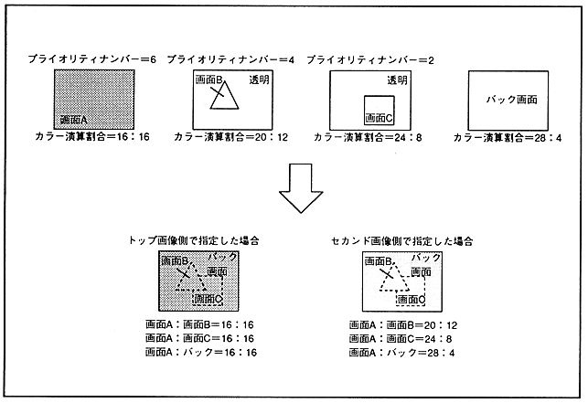

カ ラ ー Color calculation can be performed without limitation when the TV screen mode is the normal mode, but when the TV screen mode is the high resolution mode or the dedicated monitor mode, there are limitations due to the color RAM mode and the color format of the second image. Table 12.1 shows the limitations of the color calculation function.
Table 12.1 Color calculation function in high resolution mode or dedicated monitor mode
| Color RAM mode | Second image color format | Color calculation function |
| Mode 0 | Palette format or RGB format | Available |
| Mode 1 | Palette format | Not available |
| RGB format | Available | |
| Mode 2 | Palette format | Not available |
| RGB format | Available |
.